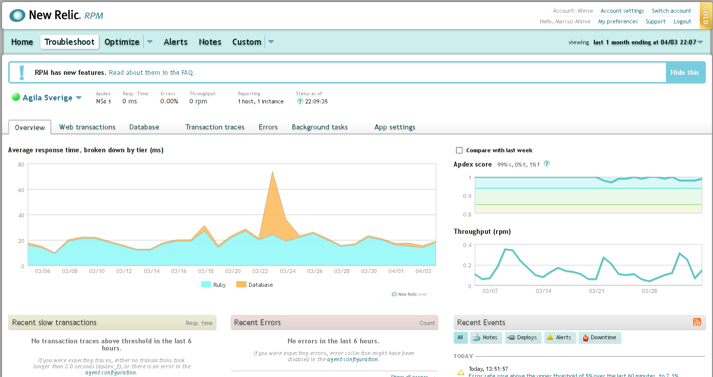
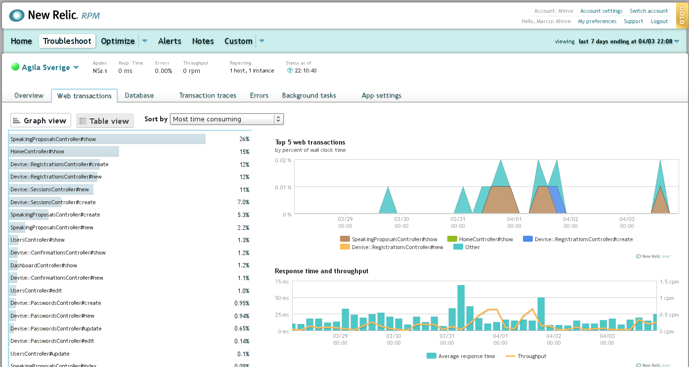
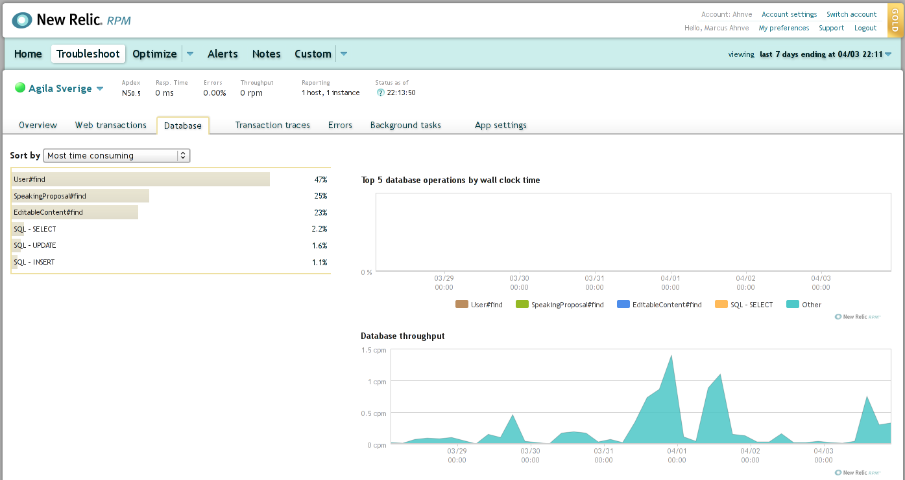
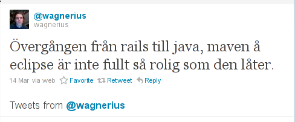

About me
- Software Developer
- Polyglot Programmer
Q: Used Ruby?
Goal of the presentation
- Most have seen the venerable Blog example
- Travellers guide
- A flyover a real project
Agenda
- Rails background
- NGNews
- Tools
- Libraries
- Deployment
About NGNews
- Financial News
- Rebuild 10 year old system
- No small public releases
- Little web traffic
- Lots of email, FTP, WS
Why Rails?
- Small project, no dedicated QA, PM etc
- Web application
- Custom development
- Linux deploy platform
- MySQL database
- Wanted to
Libraries
Views
<!DOCTYPE html>
<html>
<head>
<title>NGNews</title>
</head>
<body>
<div class='container page'>
<div class='beta'>
<%= image_tag('beta.png')%>
<header class='head line' role='banner'>
<nav class='action-bar'>
<ul>
<li>
</ul>
</nav>
</header>
</div>
</body>
</html>Haml
!!! 5
%head
%title NGNews
%body
#container.page
.beta
= image_tag('beta.png')
%header.head.line{:role => 'banner'}
%nav.action-bar
%ul
%liFilters
:javascript
var s = $('body').data('foo', '#{I18n.t('search_news')}');
:markdown
# A title
Some text
Formtastic
- Forms DSL
- Writing forms is boring
- And repetitive
The simplest form
- semantic_form_for @user do |form|
= form.inputs
= form.buttonsSlightly more complex
- semantic_form_for @user do |form|
= form.inputs do
= form.input :first_name
= form.input :last_name
= form.input :role, :as => checkbox
= form.buttons do
= form.commit_buttonJammit
- Packs your CSS and Javascripts
Define your assets
embed_assets: 'datauri'
javascripts:
common:
- public/javascripts/jquery-ui-1.8.5.custom.min.js
- public/javascripts/rails.js
stylesheets:
common:
- public/stylesheets/oocss-base.css
- public/stylesheets/colorbox.cssIn your view
@@@ Haml
= include_stylesheets :common
= include_javascripts :common
More Backendish
The Rails Ecosystem
- Vanilla Rails is just that
- Vast amount of libraries available
InheritedResources
- CRUD Controllers
- Does most of the work for you
A lot of code looks like this:
def update
@foo = Foo.find(params[:id])
respond_to do |format|
if @foo.update_attributes(params[:foo])
format.html { redirect_to(@foo) }
else
format.html { render :action => "edit" }
end
end
end
endWith InheritedResources
class FooController < ApplicationController
inherit_resources
endDevise
- A Swiss Army Knife For Your Authentication Needs
class User < ActiveRecord::Base
devise :database_authenticatable, :recoverable,
:trackable, :timeoutable,
:registerable, :confirmable, :lockable,
:token_authenticatable
endCarrierWave
- Attachments done easy
In your model
class Image < ActiveRecord::Base
validates_presence_of :file
mount_uploader :file, ImageUploader
endThe uploader
class ImageUploader < CarrierWave::Uploader::Base
include CarrierWave::MiniMagick
storage :file # can be :S3
process :resize_to_fit => [300,200]
def store_dir
"files/#{model.class.to_s.underscore}/#{mounted_as}/#{model.id}"
end
def extension_white_list
%w(jpg jpeg gif png)
end
endDelayedJob
- Large email batches
- Web service calls
- FTP calls
- Image processing
- ...
A Job
class FooJob
def initialize(foo_id)
@foo_id = foo_id
end
def perform
@service = FooService.new
@service.send(Foo.find(@foo_id))
end
endCalling a job
FooController < ActionController
def something
@foo = Foo.find(params[:id])
Delayed::Job.enqueue FooJob.new(@foo.id)
end
end- Redis backed
Savon
- If you have to use SOAP, Savon is your friend
@client = Savon::Client.new do |wsdl|
wsdl.document = SOME_URL
end
base_body ={ "something" => foo.id,
"something_else" => foo.name}
@response = @client.request :wsdl, :foo_service do |soap|
soap.namespaces['xmlns:soapenv'] = 'http://schemas.xmlsoap.org/soap/envelope/'
soap.header = SOME_HEADER
soap.body = base_body
endTesting / BDD
The BDD language
- RSpec
- Cucumber
Come see my other talk about this :)
Shoulda
- Macros
- Makes it really easy to spec your models
describe Foo do
it { should validate_presence_of :name }
it { should validate_uniqueness_of :email }
it { should allow_value('foo').for(:bar) }
it { should_not allow_value('grr').for(:bar) }
it { should have_many :zaphods }
endTimecop
Timecop.freeze(Time.now) do
@foo.publish!
@foo.published_at.should == Time.now
end
Timecop.return
Timecop.travel(Time.now + 30.days) do
@foo.should be_overdue
endFakeWeb
FakeWeb.allow_net_connect = false
FakeWeb.register_uri(:get, 'SOME_URl', :body => PREPPED_BODY)
FakeWeb.register_uri(:post, 'SOME_OTHER_URI', :body => ANOTHER_PREPPED_BODY)
service = FooService.new
service.send()
service.return_code.should == 1Mocking
flexmock(User).should_receive(:find).with('42').and_return(jane)
User.expects(:find).with('42').returns {jane}
User.should_receive(:find).with('42').and_return(jane)
User.should_receive(:find).with('42') {jane}
mock(User).find('42') {jane}Copied from the RR README
Deployment
Passenger
- mod_ruby
- Apache
- nginx
$ gem install passenger
Building native extensions. This could take a while...
Successfully installed fastthread-1.0.7
Successfully installed daemon_controller-0.2.6
Successfully installed spruz-0.2.5
Successfully installed file-tail-1.0.5
Successfully installed passenger-3.0.5
5 gems installed
$ passenger-install-apache2-module
This installer will guide you through the entire installation process. It
shouldn't take more than 3 minutes in total.
Here's what you can expect from the installation process:
1. The Apache 2 module will be installed for you.
2. You'll learn how to configure Apache.
3. You'll learn how to deploy a Ruby on Rails application.
Don't worry if anything goes wrong. This installer will advise you on how to
solve any problems.
Press Enter to continue, or Ctrl-C to abort
Unicorn
- For those times when Passenger is not an option
- Runs as separate processes, proxied from web server
SysLogLogger
- Logs to system logger
- Configuration in syslog-ng, rsyslog ...
Capistrano
$ cap deploy
* == Currently executing `deploy'
* == Currently executing `deploy:update'
** transaction: start
* == Currently executing `deploy:update_code'
updating the cached checkout on all servers
executing locally: "git ls-remote git://github.com/agilasverige/agilasverige_site.git master"
command finished in 542ms * executing "if [ -d /home/agilasverige/apps/agilasverige/shared/cached-copy ]; then cd /home/agilasverige/apps/agilasverige/shared/cached-copy && git fetch -q origin && git reset -q --hard 93bd8a8277426d5ccdb94399704ee004a6050189 && git clean -q -d -x -f; else git clone -q git://github.com/agilasverige/agilasverige_site.git /home/agilasverige/apps/agilasverige/shared/cached-copy && cd /home/agilasverige/apps/agilasverige/shared/cached-copy && git checkout -q -b deploy 93bd8a8277426d5ccdb94399704ee004a6050189; fi"
servers: ["agilasverige.cust.globalinn.com"]
[agilasverige.cust.globalinn.com] executing command
command finished in 1603ms
[...]
Recorded deployment to 'Agila Sverige' (2011-04-04 09:59:53 +0200)
** Uploaded deployment information to New Relic
* == Currently executing `deploy:restart'
* executing "touch /home/agilasverige/apps/agilasverige/current/tmp/restart.txt"
servers: ["agilasverige.cust.globalinn.com"]
[agilasverige.cust.globalinn.com] executing command
command finished in 248ms
Tools
Editors
- Vim
- Emacs
- IntelliJ / RedMine
- Eclipse
- TextMate
Continuous Integration
- Jenkins
- CIJoe
- CruiseControl.rb
- Cerberus
New Relic RPM



gem 'newrelic_rpm'$ cp new_relic.yml config
Not only Rails
- PHP
- .Net
- Java
Exceptional
- Exceptions
- 404's
- Emails
- Exceptions
- Comments
- Digest
- Reports
- Campfire
- Lighthouse
- General Post
Wrapping up

Comments
- "Dread going back to Java"
- "If I return to Java it has to be Play framework"
- Compilation, Maven
Thank You!